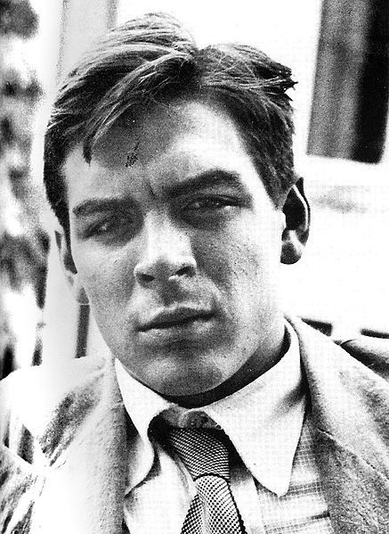
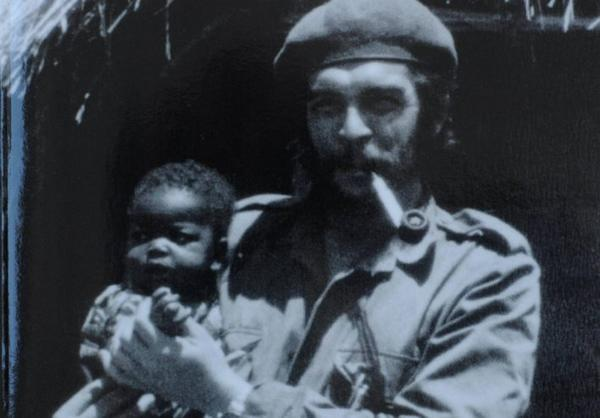
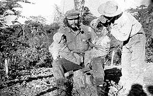

Biographie d'Ernesto "Che" Guevara

Ernesto Guevara est né le 14 juin 1928 à Rosario, en Argentine. Issu d’une famille aisée, il a montré dès son plus jeune âge une grande curiosité pour la lecture et la découverte du monde. Passionné par la médecine, il entame des études de médecine à l’Université de Buenos Aires.
Ses nombreux voyages à travers l’Amérique latine l’ont profondément marqué, lui permettant de découvrir les réalités sociales et économiques du continent. Ces expériences ont nourri sa réflexion personnelle sur la société et la justice.
Cette page se concentre uniquement sur son parcours personnel et humain, sans aborder d’aspects politiques.
En tant qu'adolescent, Che Guevara se passionnait déjà pour les livres, les échecs et le sport, malgré de graves crises d'asthme. Cette période forge sa discipline, son endurance et son intérêt pour la lecture, notamment sur la philosophie, la politique et la littérature mondiale.
Durant ses études de médecine à Buenos Aires, Che Guevara développe une sensibilité particulière aux conditions de santé des plus démunis. Il se spécialise en dermatologie et commence à envisager de voyager pour observer les inégalités sociales à travers l’Amérique latine.
Ernesto Guevara a rencontré Hilda Gadea, une économiste péruvienne exilée, à Guatemala. Elle deviendra sa première épouse. Leur relation est marquée par un échange intellectuel intense. C’est avec elle qu’il approfondira ses idées sur le monde et sur son rôle à y jouer.
En 1953, après avoir obtenu son diplôme de médecine, Che Guevara décide de repartir à l’aventure. Il visite divers pays d’Amérique du Sud, où il travaille parfois comme médecin volontaire. Ces expériences sur le terrain renforcent sa volonté d’agir concrètement auprès des populations défavorisées.
Durant les années suivantes, il participe à plusieurs conférences médicales et initiatives humanitaires. Il se fait connaître pour ses prises de parole passionnées sur l'accès aux soins, l'éducation et la dignité humaine, plaçant toujours l’humain au centre de ses préoccupations.
Après avoir voyagé en Afrique et en Asie, Che Guevara se rend en Bolivie en 1966. Il y poursuit son engagement personnel, toujours guidé par son idéal d’unité et de solidarité entre les peuples. Il consacre cette période à rencontrer des communautés rurales isolées et à leur apporter un soutien médical.
Le 9 octobre 1967, Che Guevara meurt en Bolivie à l'âge de 39 ans. Sa disparition suscite un émoi mondial. De nombreux hommages lui sont rendus à travers le monde, notamment sous forme de mémoriaux, de livres et d’expositions, soulignant l'empreinte durable qu’il a laissée dans l’histoire du XXe siècle.